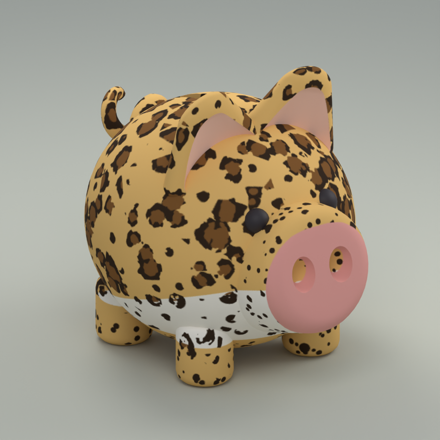
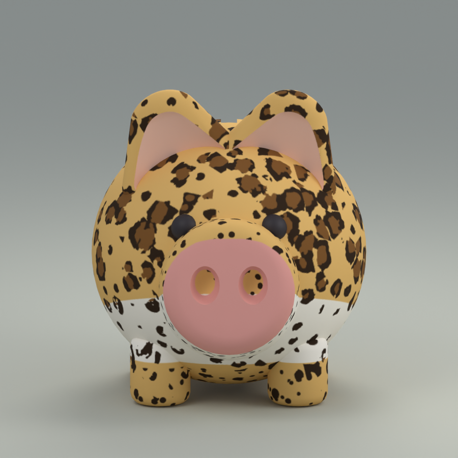
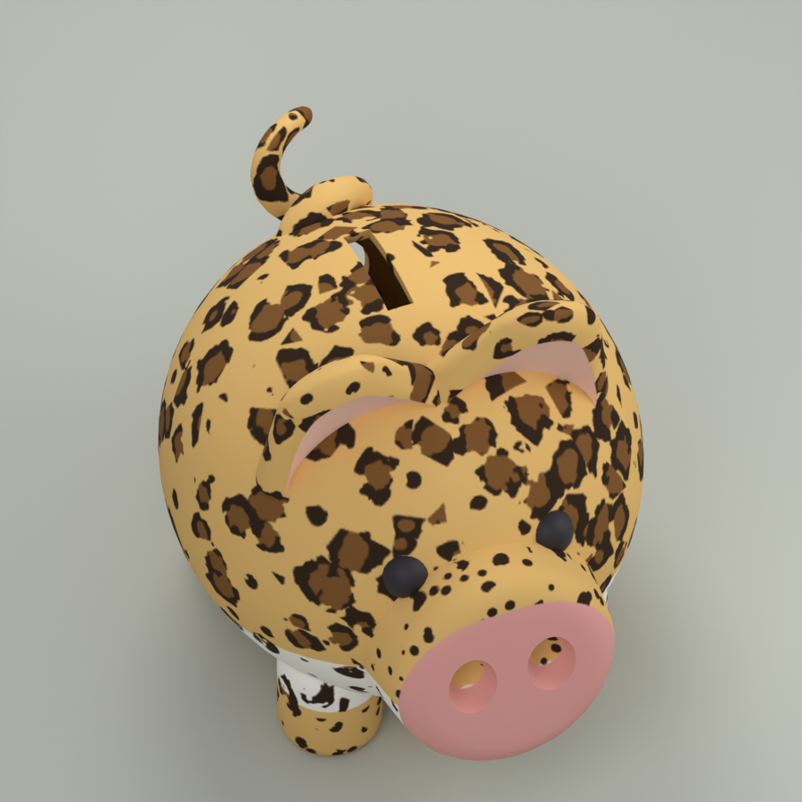
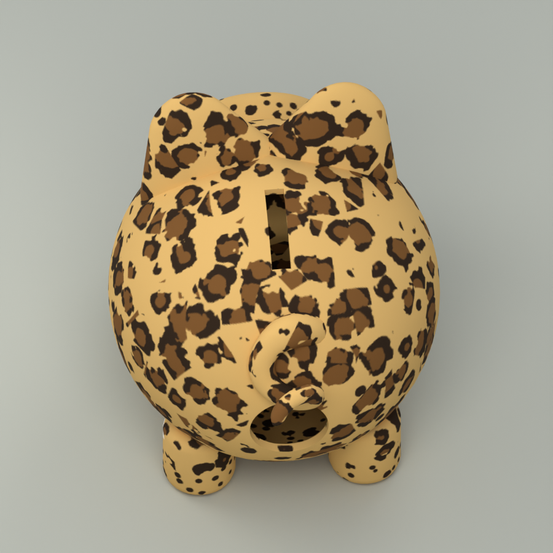

leopard · STATIC TEXTURED ASSET
Leopard
Existing coat on the existing pig geometry. Six separated meshes, two preserved texture sheets. This is a complete standalone asset package, with no change to the approved coat design.
12.00 W × 17.08 D × 13.97 H studs · 20,670 triangles. Neutral Blender lighting, not a live Roblox screenshot.



